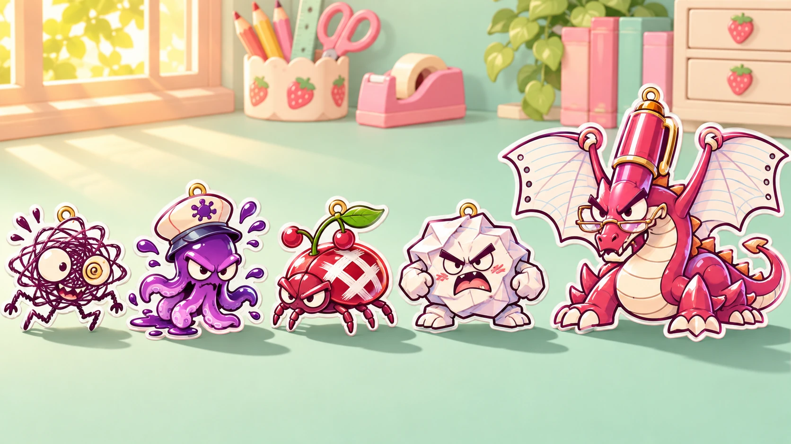

← 본부오타·숙제 군단
짝짝이 눈 낙서괴물
혀를 내밀고 떼로 달려와요.
엎질러진 잉크문어
먹물 위를 미끄러지듯 돌진해요.
빨간 오타벌레
맞으면 두 마리로 나뉘어요.
구겨진 종이공
여러 번 맞아도 계속 굴러와요.
빨간펜 숙제드래곤
최종 웨이브에서 성문을 노려요.

← 본부혀를 내밀고 떼로 달려와요.
먹물 위를 미끄러지듯 돌진해요.
맞으면 두 마리로 나뉘어요.
여러 번 맞아도 계속 굴러와요.
최종 웨이브에서 성문을 노려요.